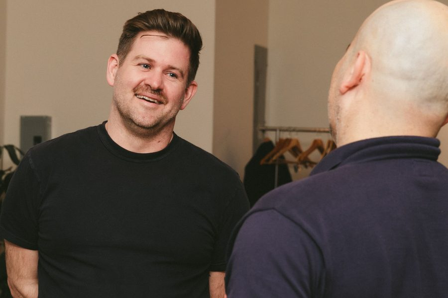
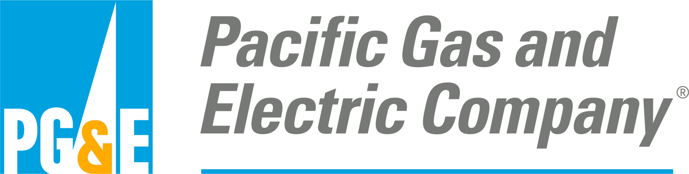
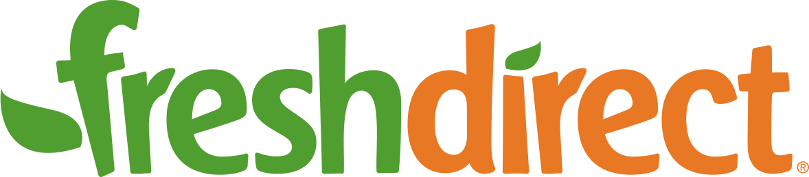

Work design · New York
The friction you’ve learned to live with—decisions that grind, meetings that eat the week, reorgs that change nothing—is accidental design doing what accidental design does. I help you make it deliberate. And I build your organization’s capacity to keep it that way after I’m gone.
01 · Who’s behind this
I spent a decade at The Ready, the organizational design firm, where I led transformation work inside some of the world’s largest companies—and inside some of its most unconventional and ambitious ones. Underneath that: graduate training in positive psychology and systems thinking, and an enduring suspicion that work doesn’t have to feel the way it usually feels.
Deliberate Works is that experience, concentrated. No leverage model, no junior team learning on your dime, no deck factory. You work with me.

“We did the reorg. Nothing actually changed.”
“Every decision still ends up routing through me.”
“Meetings eat the week. The real work starts after five.”
“Everyone is at capacity, and somehow nothing ships.”
None of these are people problems. They’re design problems—the predictable output of an operating system nobody chose, assembled by default, habit, and whoever was in the room years ago. Which is good news, because design problems are solvable. You don’t fix them with a motivational offsite or a new org chart. You fix them by changing the actual mechanics of how work works—one deliberate change at a time.
Most consulting follows the same arc: diagnose, present, disappear. By the time the deck is approved, the organization has already moved. Two years later the same problems are back, wearing new names, and so is the consulting firm. I spent ten years watching what actually sticks—and it’s never the deliverable. It’s the organizations that learn to run the loop themselves:
Name the tensions everyone feels but nobody owns—the broken handoff, the decision that never lands, the meeting that produces nothing but the next meeting.
Trace each tension back to its structural cause: unclear authority, misshapen roles, information that pools where it isn’t needed. The friction is a symptom. The design is the disease.
Run tightly scoped experiments in the actual flow of work—not a pilot in a lab, not a plan for someday. Keep what works. Retire what doesn’t. Repeat forever.
That loop—notice, make sense, experiment—is the whole method. It’s simple, it’s learnable, and once your organization runs it without me, my job is done. That’s not a poetic flourish; it’s the exit criterion written into every engagement.
Resolve one keenly felt organizational tension in six to eight weeks—and prove your organization can change itself.
No pricing games: every engagement is scoped in one conversation, and the conversation is free. See how working together works →
I’ve led and advised design work inside organizations of nearly every scale and shape—global infrastructure companies, grocery logistics, fitness empires, open-source collectives.


“Three words come to mind when I think of Sam: wise, focused, and kind. It’s rare to partner with someone who balances clear thinking with a deep understanding of people. I’m a better facilitator, writer, and person because of him.”Tim Casasola · Org designer, Airbnb
“He can grasp the deeper, systemic tensions within an organisation while sensing the very real, immediate challenges teams are facing—and what they truly need. What sets Sam apart is how human and relatable he is: grounded, dedicated, and deeply attuned to people.”Vero Vallières · Org design practitioner
“I called Sam up to bring his specific brilliance with organizations, leaders, and teams… he jumped right in and delivered everything we hoped for and more. A rare kind of upbeat, compassionate, get-stuff-done energy.”Infrastructure & urban systems client
“You absolutely delivered on our expectations. All the thought, care and time you clearly put into it showed throughout—provoking people’s thinking and helping them feel more resourced in their own roles.”Garin Rouch · CIPD event organizer
The clearest way to judge a work designer is to read how he thinks. These essays are that thinking, out loud.
Why most team charters feel dead on the wall—and what fiction writers know about building a world a team can actually act inside.
Read → July 2026The smallest complete expression of your operating system—and the easiest place to start redesigning it.
Read → August 2026A solo work design consultant’s answer to “What do you do all day?”—two live engagements, one small and one enterprise-wide, and the convictions they share.
Read →Probably by design—theirs. The traditional model is paid by the deliverable and rewarded by the re-engagement, which is why the same firm keeps solving the same problem. My model is the opposite: every engagement is built around transferring the capability, and the explicit success condition is that you don’t need me anymore. Also: there is no team of analysts behind me. The person you talk to is the person who does the work.
No. I don’t sell an operating model, and I’m suspicious of anyone who does—an off-the-shelf system is just someone else’s accidental design with better branding. The work is always specific to your organization: your tensions, your constraints, your people. Sometimes the answer borrows from self-management practice; sometimes the answer is a better weekly meeting.
It depends on the shape of the engagement, and I’d rather scope honestly than publish a number designed to anchor you. What I can tell you: the Experimentation Sprint is the smallest commitment and exists precisely so you can find out what working together is like without betting the year on it. The scoping conversation is free and useful even if we never work together.
Less than a transformation program, more than zero. The experiments run inside the actual flow of work—that’s the point—so most of the time investment is time you’re already spending, redirected. The overhead is a working session rhythm we design together up front.
Crisis is the worst time to do this work—it’s just the most common time people finally do it. The organizations that get the most from deliberate design are the ones that start while things are merely annoying rather than actually on fire. If you can name a persistent friction, you’re ready.
08 · Start
One honest paragraph about the friction you’re living with. I read every message myself and reply within two business days.
Prefer email? sam@deliberateworks.com
Not ready to talk? Read The Deliberate, the newsletter.
Rather say it out loud? Pick a time on my calendar instead.
Book time with me ↗